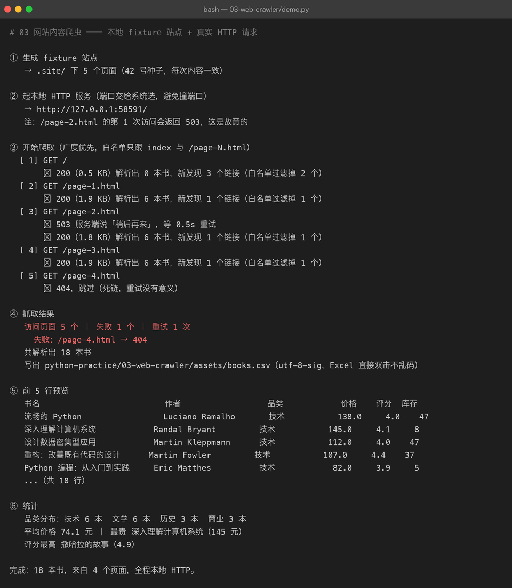

03 网站内容爬虫
难度 ●●○ 进阶 ｜ 预计 2–3 天 ｜ 依赖 requests、beautifulsoup4 上级目录：练手项目总览
你要做的东西
爬一个多页网站，把页面里的结构化数据抽出来存成 CSV：
① 起本地 fixture 站点 → .site/（5 个页面，18 本书）
② 广度优先爬取 → 发真实 HTTP 请求，跟站内链接翻页
③ 解析 HTML（CSS 选择器） → 抽字段：书名 / 作者 / 品类 / 价格 / 评分 / 库存
④ 存 CSV（utf-8-sig） → assets/books.csv取到一个页面不难，难的是把它做成一个不会出事的东西。这个项目真正练的是下面这些工程细节。
一个前提：为什么不爬真网站
练习爬虫有两个理由不要拿真网站当靶子：
- 不可复现 —— 人家明天改版，你今天写的
soup.select(".book")就全废了。文档里的截图、数字、结论全部都作废。 - 不礼貌 / 有风险 —— 练习性质的高频请求是给对方服务器添麻烦；而且真站点的反爬策略会让你学到的是「对抗」而不是「工程」。
所以这里用 make_fixture_site.py 自己造了一个站点（固定种子 42，永远长这样），并且刻意注入了两类故障：
| 注入的故障 | 在哪 | 用来验证什么 |
|---|---|---|
/page-2.html 的第 1 次请求返回 503 | serve.py | 重试 + 退避逻辑真的生效 |
最后一页的「下一页」指向不存在的 /page-4.html | make_fixture_site.py | 404 的处理（不能重试，重试一万次也还是 404） |
这两类故障在真实项目里 100% 会遇到，但平时你没法按需复现。能主动造出 bug，才能证明你防住了它。
先看结果

一屏里把这些事都说清楚了：
[ 3] GET /page-2.html→↩ 503 服务端说「稍后再来」，等 0.5s 重试→✓ 200这就是重试逻辑的可视化。注意退避是翻倍的（0.5s → 1s → 2s），不是死循环猛打。[ 5] GET /page-4.html→⊘ 404，跳过（死链，重试没有意义）4xx 不重试，5xx 才重试——这个区分是新手最容易搞错的。新发现 3 个链接（白名单过滤掉 2 个）首页有 5 个链接（3 个列表页 + about + 首页自身），白名单只放行/page-N.html，about.html被挡在外面。爬虫不设边界，迟早爬到别人的地盘上。访问页面 5 个 ｜ 失败 1 个 ｜ 重试 1 次—— 数字对得上：index + page-1/2/3 成功，page-4 失败。共解析出 18 本书—— 与 fixture 里定义的 18 本完全一致。这个数字必须对得上，否则说明有卡片解析失败被静默吞掉了。
抓到的数据（assets/books.csv，可直接用 Excel 打开）：
| 书名 | 作者 | 品类 | 价格 | 评分 | 库存 |
|---|---|---|---|---|---|
| 流畅的 Python | Luciano Ramalho | 技术 | 138.0 | 4.0 | 47 |
| 深入理解计算机系统 | Randal Bryant | 技术 | 145.0 | 4.1 | 8 |
| 设计数据密集型应用 | Martin Kleppmann | 技术 | 112.0 | 4.0 | 47 |
| …（共 18 行） |
你要学到的 Python
| 知识点 | 在本项目里落在哪 |
|---|---|
requests.Session | 复用 TCP 连接 + 统一设置请求头 |
timeout=(连接, 读取) 元组 | 不设超时 = 网络一卡程序永久挂住 |
| 状态码分类处理 | 2xx 成功 / 4xx 别重试 / 5xx 与 429 才重试 |
| 指数退避 | delay *= 2，别把对方打死 |
BeautifulSoup.select | CSS 选择器抽字段，比正则稳健得多 |
urljoin | 相对链接 → 绝对链接 |
BFS + seen 去重 | 图遍历，防止爬进死循环 |
| 白名单正则 | ^/(?:page-\d+\.html)?$ 限定可爬范围 |
| 响应编码 | resp.text 会猜错编码，中文变乱码 |
dataclass → CSV | asdict() 直接得到一个可写 CSV 的 dict |
http.server 线程化 | 用标准库起一个可控的服务来做实验 |
unicodedata.east_asian_width | 终端里中英混排对齐 |
怎么跑起来
cd python-practice/03-web-crawler
# 装依赖
python3 -m venv .venv && source .venv/bin/activate
pip install -r ../requirements.txt
python3 demo.py # 一条命令跑完：生成站点 → 起服务 → 爬 → 存 CSV为什么这个项目用
demo.py而不是demo.sh：起服务要挑动态端口、跑完还要关掉，用 Python 的线程比 shell 里&+kill干净得多。
想自己动手摸（推荐）：
python3 make_fixture_site.py # 生成 .site/
python3 serve.py # 前台起服务，默认 8123
# 另开一个终端：
curl --noproxy '*' http://127.0.0.1:8123/page-1.html | head -20
python3 crawler.py --base http://127.0.0.1:8123/ --out assets/books.csv
--noproxy '*'是本机踩过的坑：装了代理软件后，curl访问127.0.0.1也会被代理吃掉。代码里对应的处理是session.trust_env = False。
代码结构
03-web-crawler/
├── make_fixture_site.py # 生成 .site/（固定 seed，含 1 个死链注入）
├── serve.py # 托管 .site/ + 对 /page-2.html 注入 503
├── crawler.py # 爬虫本体：fetch / parse_books / extract_links / crawl
├── demo.py # 串起全流程（输出就是截图）
├── .site/ # 生成的 fixture 站点（gitignore，可随时重建）
├── assets/ # books.csv + 终端截图 + run.txt
└── README.md关键代码拆解
① 只信 resp.text 会得到乱码
实践中第一版就是踩了这个坑：输出里全是 æµçç Python。
def decode_body(resp: requests.Response) -> str:
ctype = resp.headers.get("Content-Type", "").lower()
if "charset=" in ctype:
return resp.text
return resp.content.decode(resp.apparent_encoding or "utf-8", errors="replace")原因：HTTP 响应头如果没有声明 charset，requests 会按 RFC 默认的 ISO-8859-1 去解 resp.text，中文自然全烂。正确做法是要么看响应头、要么看 HTML 里的 <meta charset>、要么让 charset_normalizer 探测一遍。
顺带一个工程习惯：自己的服务端应该老老实实发
Content-Type: text/html; charset=utf-8。这个例子里http.server没发，正好当了反面教材。
② 什么该重试，什么不该
RETRY_STATUS = {429, 500, 502, 503, 504} # 服务端「暂时」不行 → 值得重试
...
if resp.status_code in RETRY_STATUS and attempt < MAX_RETRY:
time.sleep(delay); delay *= 2 # 指数退避
continue
# 404 / 403 落到这里，直接返回 —— 它不会因为你多问几次就出现③ 白名单比黑名单安全
ALLOW_RE = re.compile(r"^/(?:page-\d+\.html)?$")
...
if parsed.netloc != host or not ALLOW_RE.match(parsed.path):
skipped += 1 # 外站 / 白名单外，一律不跟黑名单（「除了 xxx 都能爬」）永远会漏；白名单（「只有 xxx 能爬」）漏不掉。
④ 解析失败必须吵出来
except (AttributeError, ValueError) as exc:
log(f" ⚠ 跳过一张卡片（{type(exc).__name__}: {exc}）")
continue最危险的不是抛异常，是安静地跳过——你拿到 17 本书，却以为站上只有 17 本。所以这里既不崩溃、也不静默，而是打一条 ⚠ 日志，再配合最后的「共 18 本」对账。
常见坑
| 坑 | 现象 | 怎么破 |
|---|---|---|
不设 timeout | 某个请求卡住，程序永远不返回 | timeout=(3, 10) |
resp.text 猜错编码 | 中文变 æµç | 看 Content-Type 或 apparent_encoding |
| 跟着代理走 | 访问 127.0.0.1 报 ConnectionError | session.trust_env = False |
| 用正则解析 HTML | 一个标签属性变化就全崩 | BeautifulSoup + CSS 选择器 |
| 不做 URL 去重 | 两个页面互链 → 无限循环 | seen: set |
| 请求之间不 sleep | 被限流/封 IP | time.sleep(delay)，起步 0.2s |
用 len() 对齐中文表格 | 列全歪 | east_asian_width 算显示宽度 |
把 robots.txt 当空气 | 违反站点规则 | urllib.robotparser（见进阶挑战 4） |
验收标准（做完自检）
- [ ]
demo.py输出里能看到503 → 重试 → 200这一整条重试路径 - [ ] 输出里能看到
/page-4.html → 404，并且没有对它重试 - [ ]
共解析出 18 本书，与 fixture 定义的 18 本一致（少一本就说明解析漏了） - [ ]
assets/books.csv用 Excel 直接打开中文不乱码 - [ ] 输出里的书名/作者/品类三列在终端里是对齐的（中英混排）
进阶挑战
- 并发爬取 —— 用
concurrent.futures.ThreadPoolExecutor同时爬 5 个页面，对比耗时。注意：并发时礼貌间隔要按域名整体控制，不能每线程各睡各的。 - 断点续爬 —— 记录已爬过的 URL 到 JSON，中断后重跑不重复抓。
- 翻页通用化 —— 现在靠
page-\d+.html这个正则。改成解析「下一页」按钮的rel="next"或文本，让它能适配别的站。 - 加 robots.txt 检查 —— 用
urllib.robotparser在爬之前先问「我能不能爬这个路径」。 - 存进 SQLite —— 把 CSV 换成
sqlite3，重复运行用INSERT OR REPLACE幂等更新。 - 写测试 —— 给
parse_books()写pytest：塞一段固定 HTML，断言解析出 6 本书、字段值正确。这是最实用的测试类型（不依赖网络）。